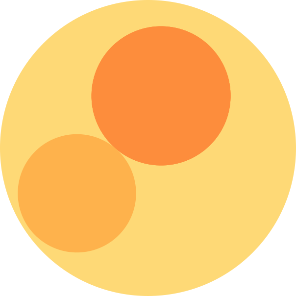
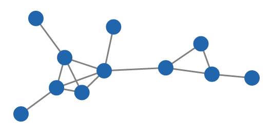
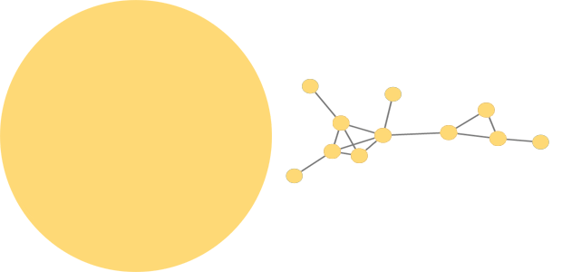

This two images show different representations of the same network.
The one on the left is called a Graph Thumbnail.
 If we break down the Graph Thumbnail into its different components.
The yellow (outermost) circle represents all the connected nodes of the network.


The light orange circles represent the 2-connected components (the subset of nodes that have at least two distinct paths to every other node within the subset). There are two 2-connected components in this network.


The dark orange circles represent the 3-connected components of a network (the subset of nodes that have at least three distinct paths to every other node within the subset).


The size of the circles, except from the outermost one, are related to the number of nodes within that component.
The more connected a component is, the darker the colour of the circle is.